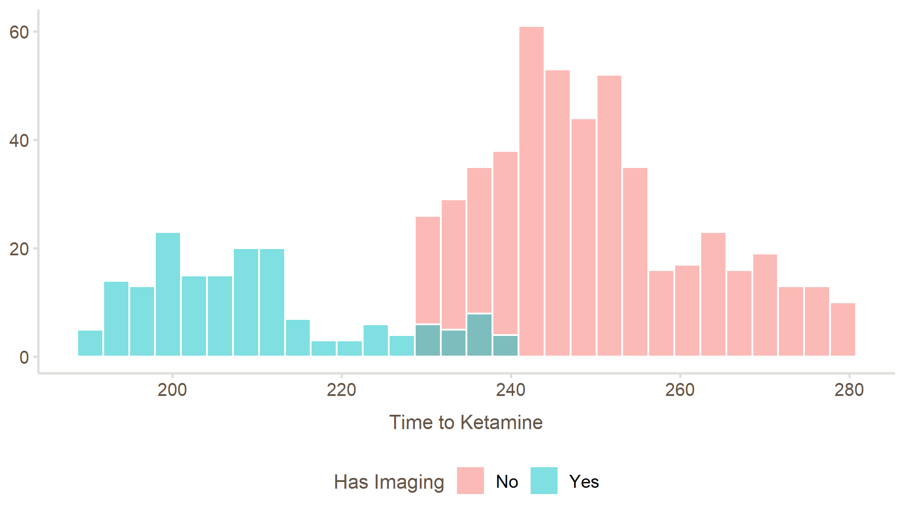
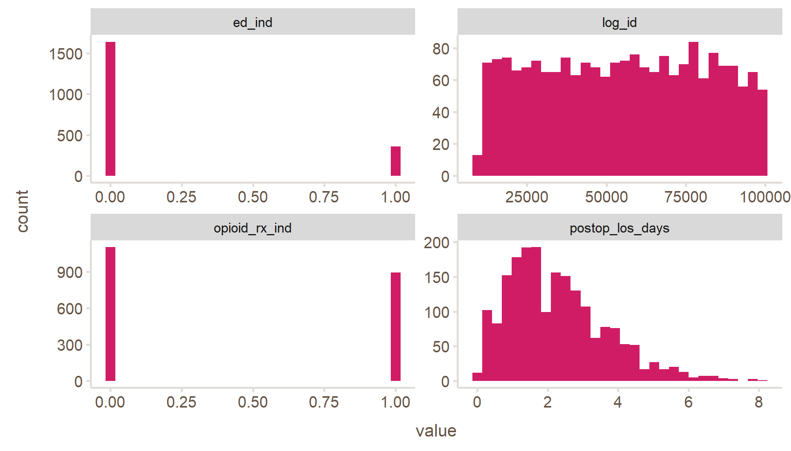

rocqi 2.0
Jake Riley
11/15/2022
What’s new? – SO SO MUCH!
New SPC engines AKA ✨
plotly✨New data sets
A small amount of breaking changes
We’re also going to review some existing features
Let’s look at the website
New search bar in top right
Subgroups for functions on reference page
Link to code on each page (ex. vignettes)
Lifecycle badges see here
Documented data sets
Improved
Breaking changes
run_sql()andrun_sql_file()now return lowercase column names by default (lowercase_names = TRUE)
* Now using the native pipe |> and requires R 4.1
* Data sets clabsi and weekend_surgeries were removed in favor of new data sets
Deprecations
All functions that were flagged for deprecation have been removed
| removed | replaced with |
|---|---|
| hc_theme_chop( ) / hc_theme_ocqi( ) | theme_chop() |
| hc_ocqi_opts( ) | hc_chop_opts() |
| ocqi_colors( ) | chop_colors() |
| scale_color_ocqi( ) / scale_fill_ocqi( ) | scale_*_chop() |
| matomo_tracking( ), row_collapse( )` | (completely removed) |
New SPC engines
üëè Thank you Ezra!!!
- ggplot + highchart +
plotly
- Why? It will be easier to add new engines in the future
More info about each engine
- how to change colors / aesthetics
- links to each engine’s API
Speaking of documentation
We also updated our SPC documentation
üëè  Thank you Bolu
Thank you Bolu
üëè and thank you Connie
One theme to rule them all
- you can use
theme_chop()with any engine - You will need to use the right pipe

Add labels easily
This replaces hc_add_n()
When you want to peek under the hood
- New functions
spc_calculate()andspc_plot() - These usually go together
Some nice run_sql() updates
üëè Ryan made it so lowercase_names is ✨ always ✨ TRUE
üëè Paul made sure ✨ all ✨ data frames come back as tibbles
üëè  Bolu fixed the
Bolu fixed the integer64 issue
One connection to rule them all
The new default is
run_sql(..., conn = cdwprd()) instead of
run_sql(..., dsn = "cdwprd")
Why?
- one connection = one session = faster run times
- opens up ability to use any ODBC connection, e.g. Clarity
run_sql(..., dsn = "cdwprd")will work but you’ll see a deprecation message
New data
Each data frame has 2,000 rows and have 2 full fiscal years
| visit_key | age_years | sex | ed_arrival_date | icd10_code | bone | ed_los_hours | pathway_utilization_ind | outside_imaging_ind | ketamine_given_ind | time_to_ketamine_mins |
|---|---|---|---|---|---|---|---|---|---|---|
| 88000629 | 8.35 | F | 2022-01-01 | S52.6 | ulna | 5.4 | 1 | 0 | 0 | NA |
| 59136998 | 9.77 | F | 2022-01-03 | S52.6 | ulna | 5.0 | 0 | 0 | 0 | NA |
| 29963825 | 5.19 | M | 2022-01-04 | S52.5 | radius | 5.1 | 0 | 0 | 1 | 254 |
| 17187448 | 11.37 | M | 2022-01-04 | S59.2 | radius | 5.2 | 0 | 0 | 1 | 256 |
| log_id | service | surgery_type | day_of_week | surgery_date | hospital_discharge_date | postop_los_days | ed_ind | opioid_rx_ind |
|---|---|---|---|---|---|---|---|---|
| 10088 | General Surgery | Inpatient | Tue | 2022-06-28 | 2022-06-28 | 0.8 | 1 | 0 |
| 10218 | General Surgery | Inpatient | Tue | 2023-01-03 | 2023-01-04 | 1.3 | 0 | 0 |
| 10229 | Otolaryngology | Emergent | Fri | 2022-02-11 | 2022-02-12 | 1.5 | 1 | 1 |
Each data set has examples
Oldies but goodies
Some features we’ve had that might not be common knowledge
Make sure your plot is worthy
Make sure you are using
spc()appropriately with this functionYour x-axis groups should always have 20+ observations
head(surgeries, 600) |>
plotly_spc(x = surgery_date, y = opioid_rx_ind, chart = "p") |>
check_spc_assumptions()Warning: Small sample size detected (n<20) at 2022-08-01
Small sample size detected (n<20) at 2022-10-01
Small sample size detected (n<20) at 2022-11-01
Small sample size detected (n<20) at 2023-06-01
Small sample size detected (n<20) at 2023-07-01
Small sample size detected (n<20) at 2023-09-01
Small sample size detected (n<20) at 2023-11-01[1] FALSEPresentation-ready data frames
If you use our blocks naming conventions, rocqi will spruce up your tables
Let’s look at sepsis
| visit_key | hospital_admit_date | time_to_abx_mins | abx_30_min_ind |
|---|---|---|---|
| 16314283 | 2024-06-29 | 26 | 1 |
| 47269438 | 2024-06-29 | 31 | 0 |
With this one function, we see a big difference
format_data_frame()
We can see how these arguments change the output
sepsis |>
format_data_frame(
date_format = "%b %e",
keep_uppercase = uppercase_patterns(add = "abx"),
recode_indicators = indicator_values(if_1 = "within", if_0 = "exceeds")
)| Hospital Admit Date | Time To ABX (Minutes) | ABX 30 Min |
|---|---|---|
| Jun 29 | 26 | within |
| Jun 29 | 31 | exceeds |
nice_display_names()
Sometimes you just want to rename the columns
nice_display_names()
Add or remove uppercase patterns
text <- c("hosp_admit_date", "pct_compliance", "surg_fy")
nice_display_names(
text,
keep_uppercase = uppercase_patterns(add = "compliance", remove = "fy")
)[1] "Hosp Admit Date" "% COMPLIANCE" "Surg Fy" Use regular expressions to add new patterns
recode_indicators()
This function has 3 options: * what to do if the value is 1 * what to do if the value is 0 * what to do if the value is NA
recode_indicators()
You can use it inside mutate() like this
| imaging_ind | imaging_text | pathway_ind | pathway_text |
|---|---|---|---|
| 1 | brought | NA | unknown |
| 0 | needs | 1 | used |
| NA | not applicable | 0 | not used |
Avoid big dips in the data
If a month that isn’t over, it can look like the data has had a huge drop
remove_incomplete_end_dates()
If we look at the date ranges, we see that the dates only go through May 10
To remove incomplete months/weeks, etc, use this function
Reporting on the fiscal calendar
[1] November
12 Levels: July August September October November December January ... Juneuse {q} {yy} or {yyyy} to format the output
Year-over-year over easy
The fiscal functions help with year-over-year charts
set.seed(2022)
tibble(
surgery_date = as.Date("2021-07-01") %m+% months(0:23),
n = c(rnorm(12, 100, 15), rnorm(12, 110, 15)),
month = fiscal_month(surgery_date),
year = fiscal_year(surgery_date)
) |>
ggplot(aes(month, n, group = year, color = factor(year))) +
geom_line() +
ylim(0, NA) +
theme(legend.position = "none")From one date, many
Get the start of each day / week / month / quarter / year
| visit_key | hospital_admit_date | time_to_abx_mins | abx_30_min_ind | hospital_admit_date_day | hospital_admit_date_week | hospital_admit_date_month | hospital_admit_date_quarter | hospital_admit_date_year |
|---|---|---|---|---|---|---|---|---|
| 16314283 | 2024-06-29 | 26 | 1 | 2024-06-29 | 2024-06-24 | 2024-06-01 | 2024-04-01 | 2024-01-01 |
| 47269438 | 2024-06-29 | 31 | 0 | 2024-06-29 | 2024-06-24 | 2024-06-01 | 2024-04-01 | 2024-01-01 |
CHOP colors
No longer need to use c()
… but you can
üëè  Thanks goes to Jen Goodwin
Thanks goes to Jen Goodwin
CHOP colors
| shade | blue | pink | green | brown | dark-blue | white |
|---|---|---|---|---|---|---|
| 1 | #d6ecf1 | #f6d2e0 | #e4ebd8 | #e0ddda | - | - |
| 2 | #add9e4 | #eca4c1 | #c9d7b2 | #c2bbb5 | - | - |
| 3 | #85c6d6 | #e377a3 | #afc28b | #a39990 | - | - |
| 4 | #5cb3c9 | #d94984 | #94ae65 | #958579 | - | - |
| 5 | #33a0bb | #d01c65 | #799a3e | #665546 | - | - |
| 6 | #26778b | #9c154c | #5b732f | #4d4035 | - | - |
| 7 | #1a505e | #680e33 | #3d4d1f | #332b23 | - | - |
| 8 | #0d282f | #340719 | #1e2710 | #191512 | - | - |
| NA | - | - | - | - | #005587 | #fbfbfb |
Exploratory analysis
$character
|skim_variable | n_missing| complete_rate| min| max| empty| n_unique| whitespace|
|:-------------|---------:|-------------:|---:|---:|-----:|--------:|----------:|
|service | 0| 1| 11| 15| 0| 3| 0|
|surgery_type | 0| 1| 8| 11| 0| 3| 0|
$Date
|skim_variable | n_missing| complete_rate|min |max |median | n_unique|
|:-----------------------|---------:|-------------:|:----------|:----------|:----------|--------:|
|surgery_date | 0| 1|2022-01-03 |2023-12-29 |2023-01-02 | 557|
|hospital_discharge_date | 0| 1|2022-01-04 |2024-01-02 |2023-01-04 | 656|
$factor
|skim_variable | n_missing| complete_rate|ordered | n_unique|top_counts |
|:-------------|---------:|-------------:|:-------|--------:|:--------------------------------------|
|day_of_week | 0| 1|TRUE | 7|Wed: 427, Mon: 394, Tue: 394, Fri: 394 |
$numeric
|skim_variable | n_missing| complete_rate| mean| sd| p0| p25| p50| p75| p100|hist |
|:---------------|---------:|-------------:|-----------:|-------------:|-----:|--------:|-------:|--------:|-------:|:-----|
|log_id | 0| 1| 54937.22900| 25844.8141266| 10088| 32412.25| 55617.5| 77441.75| 99969.0|▇▇▇▇▇ |
|postop_los_days | 0| 1| 2.26755| 1.4067379| 0| 1.20| 2.0| 3.10| 8.1|▇▇▃▁▁ |
|ed_ind | 0| 1| 0.17950| 0.3838664| 0| 0.00| 0.0| 0.00| 1.0|▇▁▁▁▂ |
|opioid_rx_ind | 0| 1| 0.44700| 0.4973074| 0| 0.00| 0.0| 1.00| 1.0|▇▁▁▁▆ |
Templates
- R Markdown Reports
- Flexdashboard
- Shiny Prerendered
Templates
- Branding ready-to-go
- Shiny debugging helper / reminder
- Plot theme defaults
Templates
- Base script has standard layout
- Looks good from the start üòÑ
The Demo
Get involved
Add issues
Join our team
- Participate in monthly sprint planning (ask me to add you)
- Learn package development
- Help other analysts
Lastly
How do we ensure analysts are as proficient with
rocqias they are withdplyr?quick hits?
slack messages in
#r?ensure at least one person on product team is proficient in
rocqifor code reviewstart-up messages?